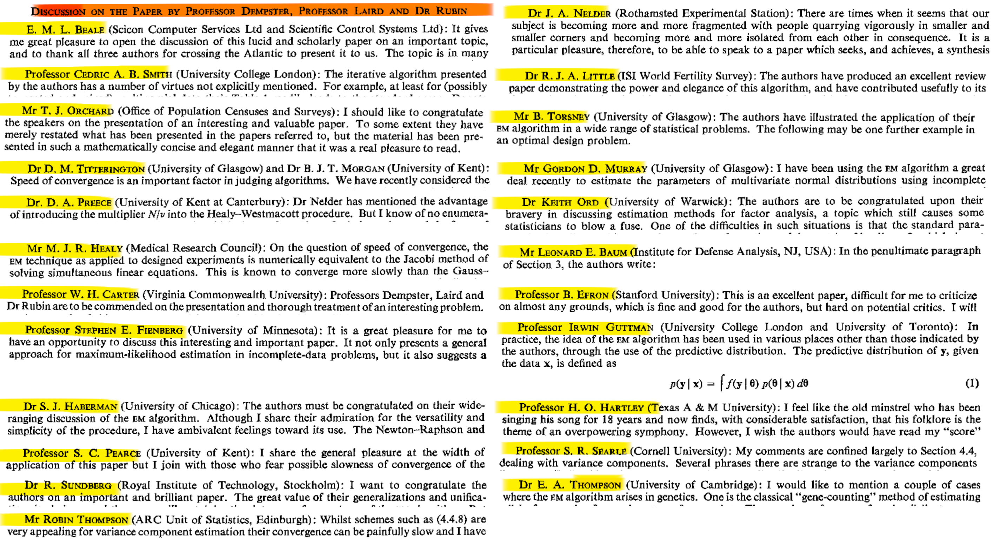
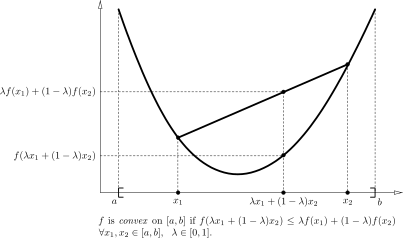
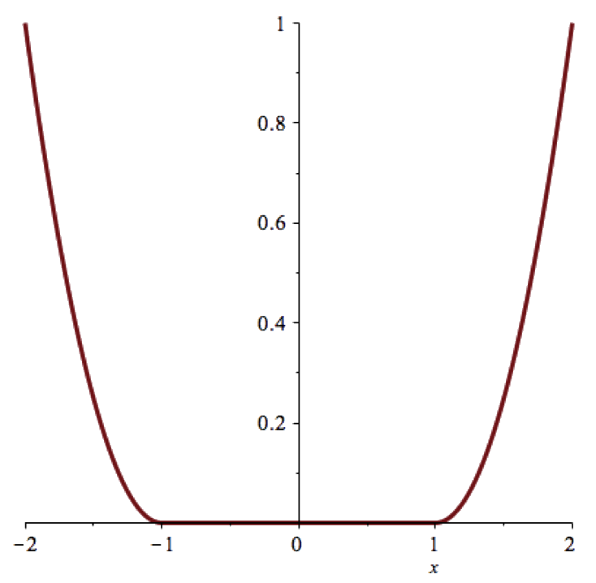
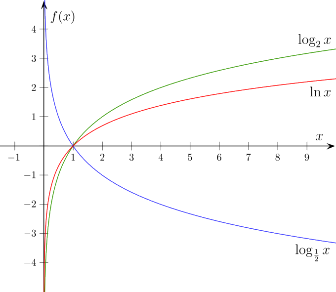
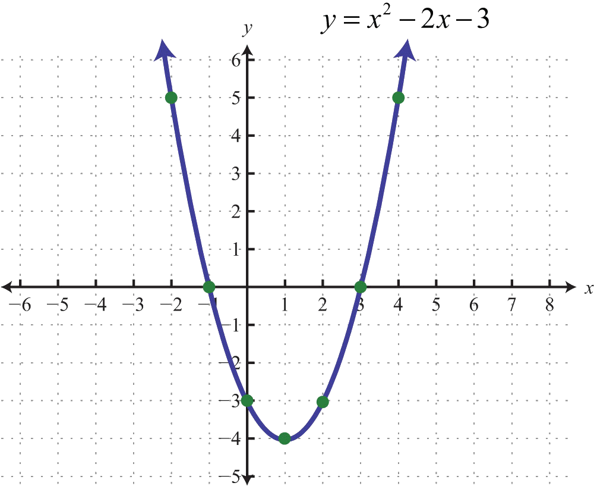

As you'll show, log-likelihood derivative is
\begin{align}
\frac{\partial {\cal L}}{\partial \mu_k} &= \sum_n \prob{P}{k|x_n,\vec{\theta}} \frac{x-\mu_k}{\sigma^2}
\end{align}
Mixture of 2 Gaussians
assuming known $\sigma$ but not $\mu_k$
As you'll show, log-likelihood derivative is
\begin{align}
\frac{\partial {\cal L}}{\partial \mu_k} &= \sum_n \prob{P}{k|x_n,\vec{\theta}} \frac{x-\mu_k}{\sigma^2}
\end{align}
As you'll show next$^{*}$
\begin{align}
\frac{\partial^2 {\cal L}}{\partial^2 \mu_k} &= -\sum_n \prob{P}{k|x_n,\vec{\theta}} \frac{1}{\sigma^2}
\end{align}
Mixture of 2 Gaussians
assuming known $\sigma$ but not $\mu_k$
Using the good old Newton-Raphson update: $\mu = \mu - \frac{\partial {\cal L}}{\partial \mu_k}/\frac{\partial^2 {\cal L}}{\partial^2 \mu_k}$
You will show
\[
\mu_k = \frac{\sum_n \left(\prob{P}{k|x_n,\vec{\theta}} x_n\right)}{\sum_n \prob{P}{k|x_n,\vec{\theta}} }
\]
Compare to soft k-means: Iterations
Update
Re-estimate the $K$ cluster centers (aka the centroid or mean), by assuming the memberships found above are correct.
\begin{align}
\hat{\mu}_k &= \frac{\underset{n}{\sum}r_k^n \vec{x}_n}{R_k}\\
R_k &= \underset{n}{\sum} r_k^n
\end{align}
GMMs and k-means
responsibilities are posteriors over latents
update is maximization of the likelihood
Both "hacky" approaches to solve a latent variable problem use the same general technique
Expectation Maximization: a meta-algorithm
too important to simply skim!

Convexity

Shades of Convex
Convex

Strictly convex

Strongly convex

Convexity
Theorem:
if $f(x)$ is twice differentiable on $[a,b]$ and $f^{\prime \prime}(x) \ge 0$ on $[a,b]$ then $f(x)$ is convex on $[a,b]$.
Convexity of logarithm
Theorem:
$-\ln(x)$ is strictly convex on $(0, \infty)$
Jensen's inequality
Theorem:
Let $f$ be a convex function on an interval $I$. If $x_1, x_2, \dots, x_n \in I$ with $\lambda_1, \lambda_2, \dots, \lambda_n \ge 0$ and $\sum_{i=1}^n\lambda_i=1$
\begin{align}
f\left(\sum_{i=1}^n\lambda_ix_i\right) & \le \sum_{i=1}^n \lambda_i f(x_i)
\end{align}